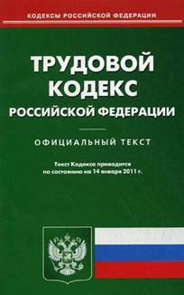

Командирование в выходной день. Как оформить?
| Первичные консультации всегда оказываются БЕСПЛАТНО! |
Нередко специалисты кадровой службы сталкиваются с ситуацией, когда работника организации направляют в служебную командировку, а день выбытия в командировку или день прибытия из нее совпадает с выходным днем. Как правильно оформить кадровые документы в этом случае?
Данную ситуацию следует рассматривать как привлечение работника к работе в выходной день, которое возможно произвести только с письменного согласия работника в случае необходимости выполнения непредвиденных работ (статья 113 Трудового кодекса Российской Федерации, далее по тексту ТК РФ).
Как на командирование, так и на привлечение к работе в выходные дни существуют определенные ограничения:
- запрет для беременных женщин и работников в возрасте до 18 лет (статьи 259, 268 ТК РФ),
- право на отказ, если это запрещено по состоянию здоровья в соответствии с медицинским заключением, для инвалидов, женщин, имеющих детей до трех лет, матерям и отцам, воспитывающим без супруга (супруги) детей в возрасте до пяти лет, работникам, имеющим детей-инвалидов, и работникам, осуществляющим уход за больными членами их семей (статьи 113, 259 ТК РФ).
При командировании и привлечении работника к работе в выходной день, помимо получения согласия от работника, необходимо, при наличии, учесть мнение выборного органа первичной профсоюзной организации (статья 113 ТК РФ).
Итак, первым этапом направляем работнику под роспись письменное уведомление о предстоящем командировании (привлечении к работе) в выходной день, указав в уведомлении следующую информацию:
- обоснование необходимости командирования в выходной день,
- право работника на отказ от командирования, если он относится к льготной категории работников,
- возможность выбора компенсации за командирование в выходной день в случае согласия.
Т.к. в случае привлечения работника к работе в выходной день в период нахождения его в командировке, оплата труда производится в соответствии с трудовым законодательством РФ (пункт 5 Постановления Правительства РФ от 13.10.2008г. № 749 об особенностях направления работников в служебные командировки), то работник имеет право выбора (статья 153 ТК РФ): получить за этот день оплату в двойном размере, либо другой день отдыха (в этом случае работа в выходной день оплачивается в одинарном размере, а день отдыха оплате не подлежит).
Вторым этапом получаем от работника либо мотивированный письменный отказ от командирования (привлечения к работе) в выходной день либо письменное заявление, в котором работник:
- соглашается на командирование (привлечение к работе) в выходной день с указанием конкретной даты,
- указывает, что ознакомлен с правом отказа от командирования (привлечения к работе) в выходной день, в случае если работник относится к льготной категории, и прикладывает к заявлению медицинское заключение об отсутствии противопоказаний на командирование (привлечение к работе) в выходной день,
- при желании, просит предоставить ему другой день отдыха с указанием конкретной даты.
Третьим этапом издаем приказ (распоряжение) в произвольной форме о командировании (привлечении к работе) в выходной день (статья 113 ТК РФ), в котором перечисляем:
- обоснование необходимости командирования (привлечения к работе) в выходной день (с указанием конкретной даты),
- информацию о работнике (фамилия, имя, отчество, должность),
- указание бухгалтерии о порядке оплаты командирования (привлечения к работе) в выходной день.
К приказу прилагаем уведомление о необходимости командирования (привлечения к работе) в выходной день, заявление работника о согласии и, в случае наличия, медицинское заключение об отсутствии противопоказаний.
Далее оформляем документы, относящиеся непосредственно к командированию: служебное задание, приказ о направлении в командировку, командировочное удостоверение.
Возможность привлечения к работе, командирования в выходные или нерабочие праздничные дни, а также порядок оплаты труда в этих случаях должны быть предусмотрены в локальных нормативных актах организации (Правилах внутреннего трудового распорядка, Положении об оплате труда работников и Положении о командировании работников).
Автор: Татьяна Хаустова
 командировочный документ,
оформление командировочных документов,
документы подтверждающие командировочные расходы,
отчетные документы для командировочных
командировочный документ,
оформление командировочных документов,
документы подтверждающие командировочные расходы,
отчетные документы для командировочных
12.06.2012, 5869 просмотров.